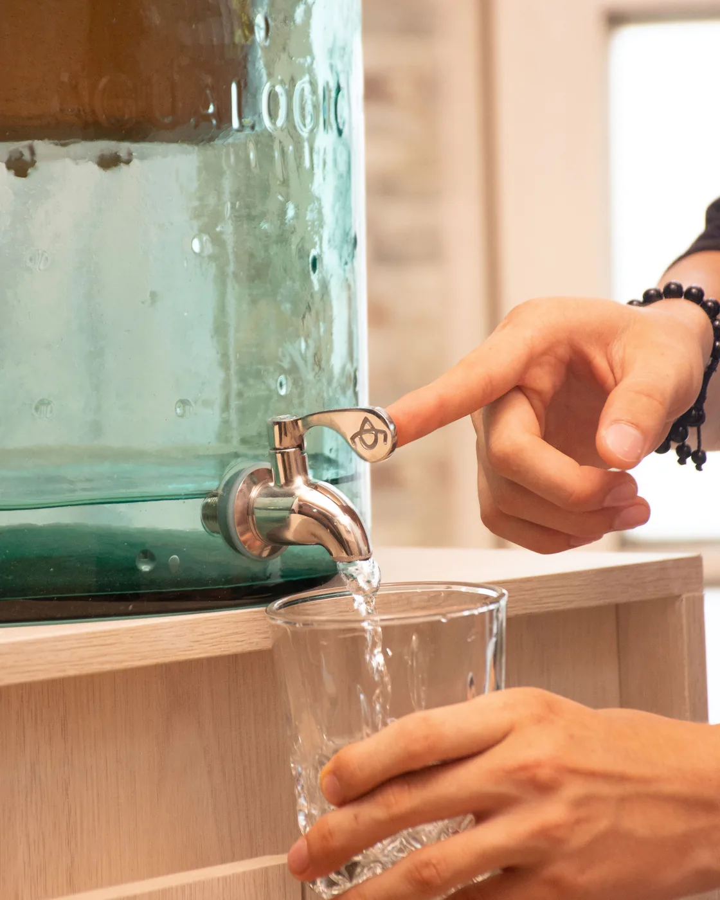
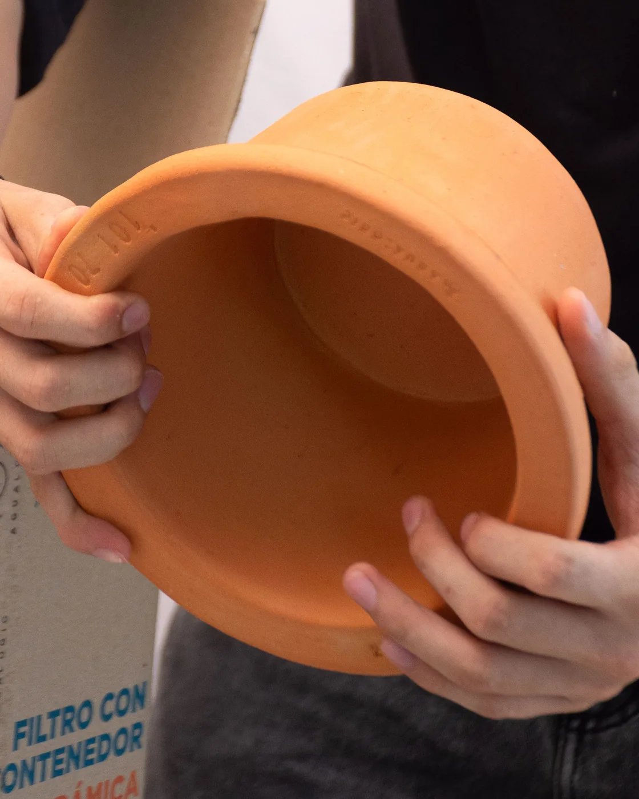
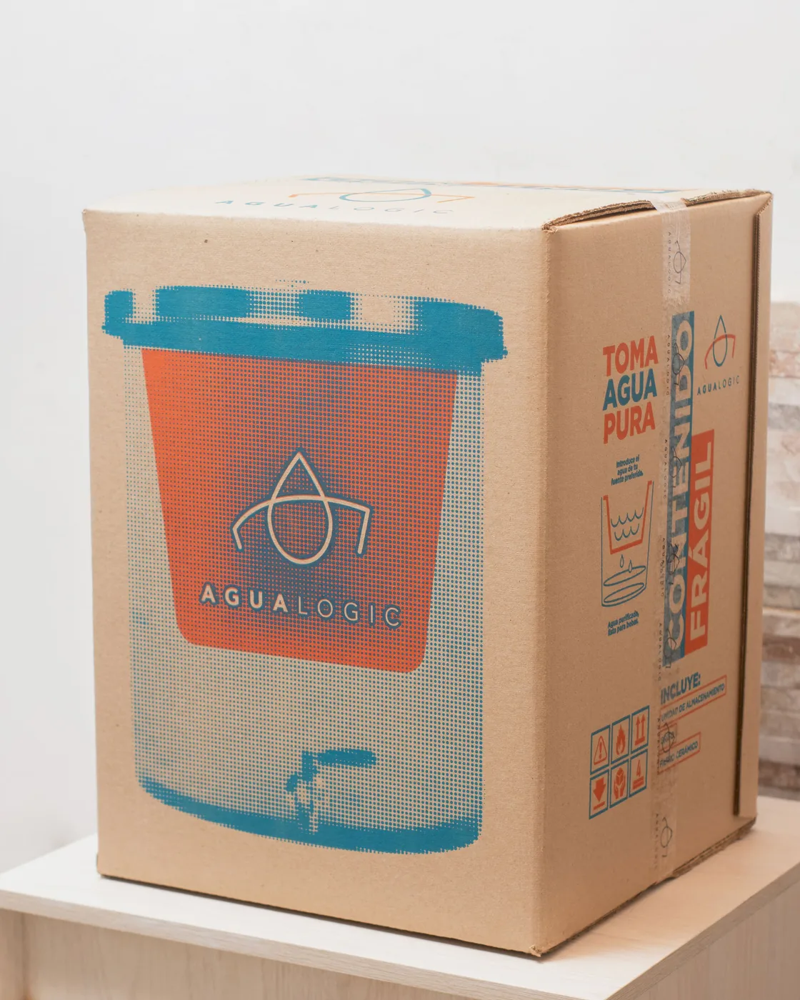
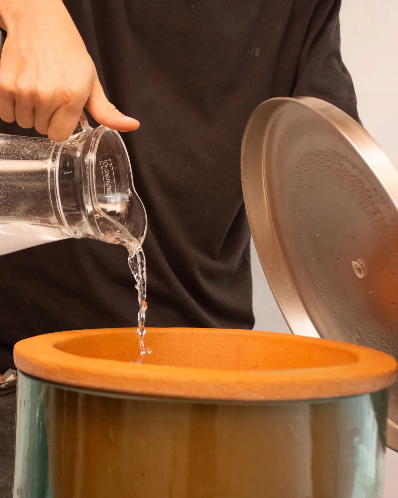
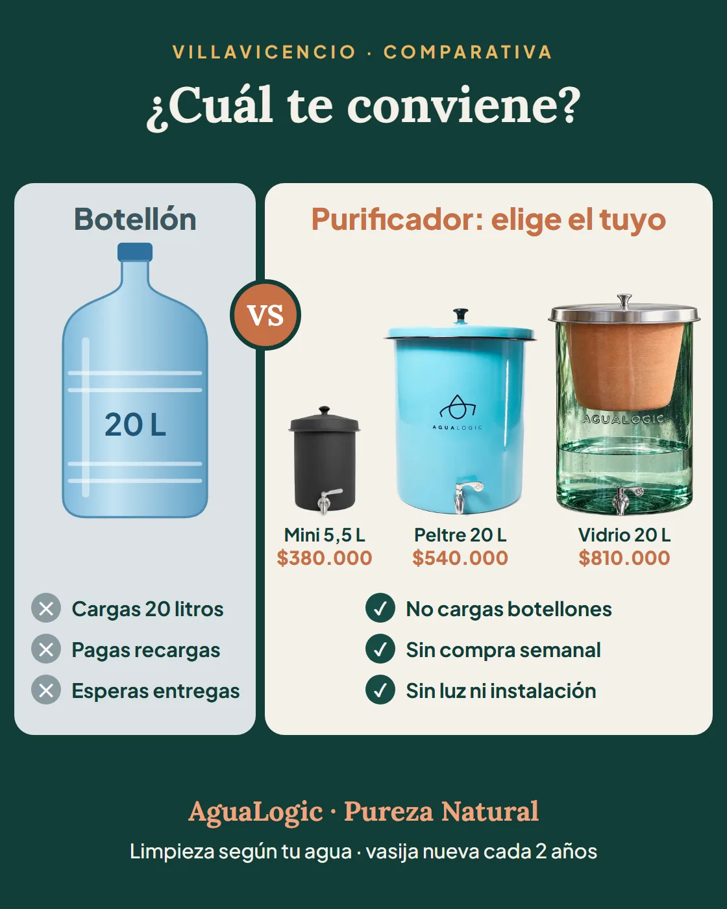
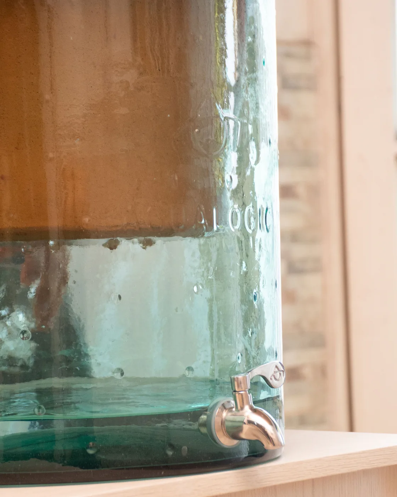

Agua segura en casa · 27 nov 2026
Purificador de agua por gravedad en Villavicencio: cómo funciona
Cómo funciona paso a paso, qué piezas tiene y cuánta agua entrega por hora.
Leer la guía
Agua segura en casa · 24 nov 2026
Filtro de agua o purificador: cuál es la diferencia
Qué es el filtro cerámico, qué es el purificador y qué comparar antes de comprar.
Leer la guía
Guía de compra · 10 nov 2026
Qué purificador elegir según tu familia
Una persona, una pareja o una familia grande: el tamaño correcto y cuánto cuesta.
Leer la guía
Uso y mantenimiento · 8 nov 2026
Cómo curar la vasija de barro de tu purificador
Cuántas cargas necesita, qué hacer con esa agua y cómo evitar el sabor a arcilla.
Leer el paso a paso
Guía de compra · 8 nov 2026
Purificador vs botellón: cuál conviene en Villavicencio
Costo mensual, comodidad y calidad del agua, con precios reales y una calculadora de ahorro.
Leer la comparativa
Villavicencio y el Meta · 8 nov 2026
Purificadores de agua en Villavicencio: cuál elegir
Agua pura para el hogar, cuánto cuesta cada modelo y cuánto ahorras frente a los botellones.
Leer la guía